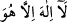
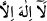
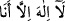

Hak Teâlâ’nın seninle konuşması mukadder olur.
Bu, işin başında idi ve başlangıçta olana (mübtedî) yumuşak davranılmıştı. Diğer
defada ise Mûsâ (a.s.) baygın olarak yere düşmüştü. O ayılırken melekler ona şöyle
diyordu: “Ey hayızlı kadının oğlu! Senin gibisi mi, rü’yeti (Allahı görmeyi) ister.”
Keşke, melekler burada Mûsâ (a.s.)’ın konumunu bilselerdi, onu ayıplamazlardı. Çünkü
Mûsâ (a.s.) ilk halde talep eden bir mürid konumunda idi. Nihâyette ise istenen (matlup)
bir kul oldu ve onun tâlibi de Cenâb-ı Hak oldu; onu kendisi için seçti.
Denilmiştir ki: Mûsâ (a.s.)’ın ağacı ile Âdem (a.s.)’ın ağacı birbirinden ne kadar
farklıdır! Âdem’in ağacının yanında mihnetler ve imtihanlar zuhûr etmiş, Mûsâ (a.s.)’ın
ağacının yanında ise nübüvvet ve risâlet ortaya çıkmıştır.
Ey arkadaşım, şâyet bu sözü söyleyen kimse, Âdem (a.s.)’ın ağacının hakîkatını
bilseydi, onun hakkında böyle bir söz sarfetmezdi. Çünkü Âdem (a.s.)’ın ağacı,
rubûbiyyet ağacına işârettir. Bu yüzdendir ki Allah Teâlâ: “Bu ağaca yaklaşmayın”
(el-Bakara, 2/35) buyurdu. Zira Âdem (a.s.) burada Hakk’ın sıfatlarıyla muttasıftı ve
onun “yaşamak”tan kasdettiği şey hakîki anlamda yaşama idi. Bu nedenle Cenâb-ı Hak
ona bunu yasaklamış ve şöyle demiştir: “Bu senin için mümkün olmayan bir şeydir.”
Zira ezeliyyetin hakîkatının, muhdes (sonradan olan şey) de bulunması (ittihadı)
imkânsızdır. Allah Teâlâ, böyle dedi ve fakat ağacın ezeliyetini de ızhar etti. Âdem
(a.s.)’a sekr hâli ârız oldu ve ağacın meyvesini yememeğe sabredemedi. Böylece
Rubûbiyyet habbesinden yedi. Onun bu hâli, gayretullaha dokundu ve cennet de onu
taşımaya güç yetiremedi. Bunun üzerine cennetten aşk ve şevk ehlinin gurbet diyarı olan
yeryüzüne indirildi. Âdem’in ağacı, sırlar (esrâr) ağacı; Mûsâ’nın ağacı ise nurlar
(envâr) ağacı idi. Envâr ebrâr için, esrâr ise ahyâr içindir.
Bazı büyükler demiştir ki: Tecellî’nin ağaçtan zuhûru, kelâmın da keyfiyetsiz ve
cihetsiz vukuu câiz olunca; insanlık ağacından tecellî’nin ortaya çıkması öncelikle
câizdir. Bu yüzden tevhîdi üç kısma ayırdılar: Birincisi, “ (lâ ilâhe illâ hû)”
mertebesi. İkincisi, “ (lâ ilâhe illâ ente)” mertebesi. Üçüncüsü, “ (lâ
ilâhe illâ ene)” mertebesi. Hakikatte kadîm ve ezelî kelâmıyla konuşan, Hak Teâlâ’dır.
Tatmak (zevk etmek) istersen ve ehil isen vicdâna yönel. Aksi halde îman etmen sana
yeter. Zira kelâm, ya vicdanla beraberdir, yahut îman ehliyle beraberdir. Allah’ın selâmı
seçilmiş hayırlı kulların (ahyâr) ve ebrâr sınıfındaki müminlerin üzerine olsun.
Ya Rabbi, eşyayı olduğu gibi, hakikati üzere bize göster. Zira kâinât bir hayaldir,
hakîkatta hak olan O’dur. O’ndan başka hakiki varlık sâhibi yoktur. Şâhid olunan da yine
sadece O’dur. Ey miskîn, bunu anlarsan ganimet elde etmiş olursun.
Şeyh Sa’dî, âşıkın lisanıyla şöyle dedi:
Senin yanında benim varlığım kalmadı
Senin yâdınla gururum, benliğim kalmadı
Kabahatimi görürsen beni kınama
Benim yakamda da olan sensin zira.